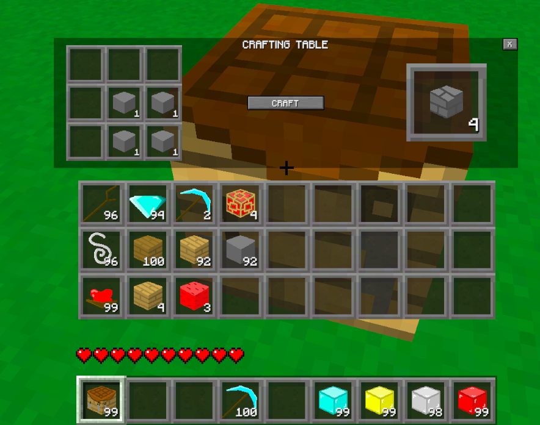
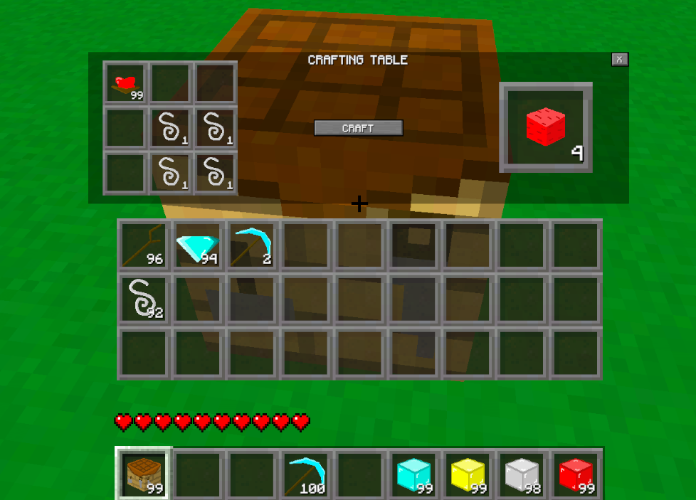
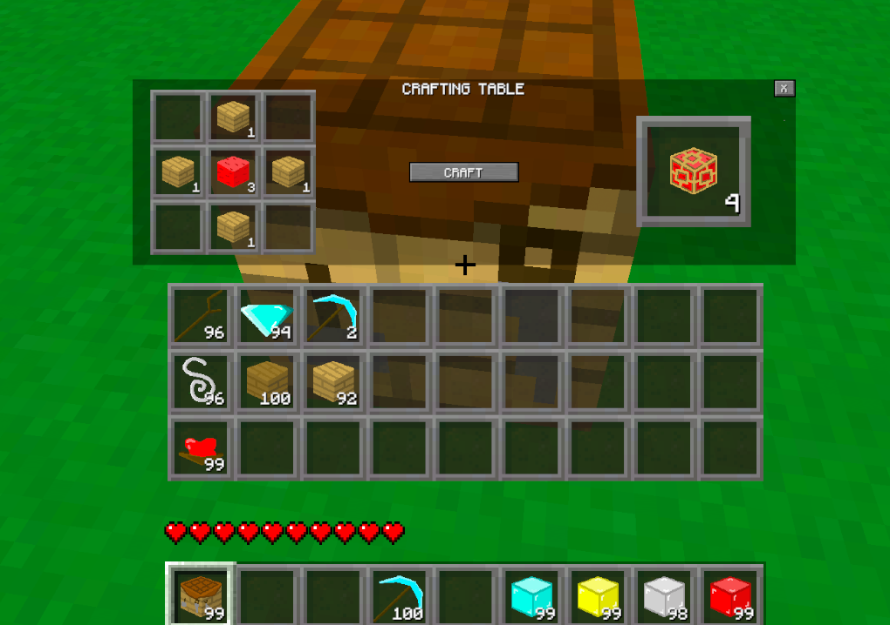
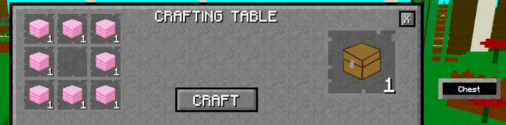
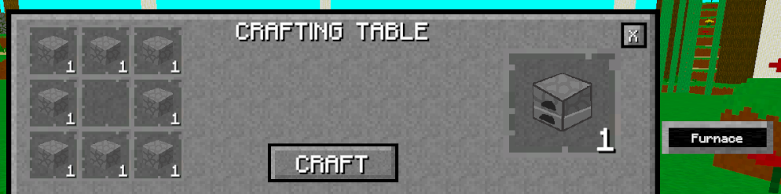

Overview
This page exists because I want players to put in a little effort to find and learn the recipes. I like the idea of looking up recipes and trying to remember them.
This page will also keep getting updated as I make more recipes for the items in the game. And when I feel like taking pictures and uploading them onto the site. It's very tedious to do so. Some of the pictures are also a little old, but I'm using them till I feel like updating them.
Stone Recipes
These recipes will be exactly the same with their respective stone types: Stone, Granite, Diorite, Andesite, Sandstone, Red Sandstone, Inferno Stone, Blackstone, and Void Stone. Hopefully I'm not forgetting anything there.

Wood Recipes
These recipes will be the same format between all the different wood types.


Wool Recipes
The recipes for the wool blocks will be the same between all the wool colours. They do currently have to be made with Oak Wood only though.


Food Recipes
There are quite a number of foods in the game as of right now. Not all of them are craftable, or even obtainable in the game outside of Creative Mode, but here are the recipes for the foods that can currently be crafted.


Weapon and Armour Recipes
These recipes will be the same across the different variations of these items: Wood, Leather, Stone, Iron, Diamond, Infernal.


Work Recipes
For the Chest or Crafting Table, any type of work will work.

